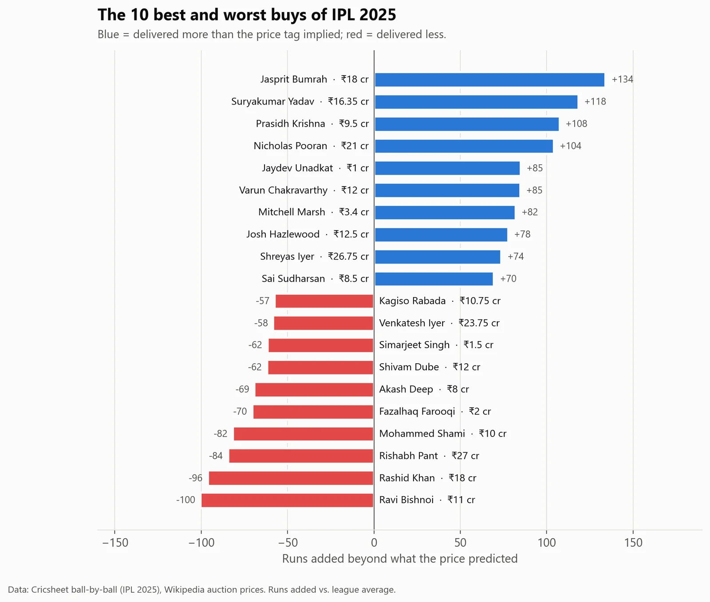
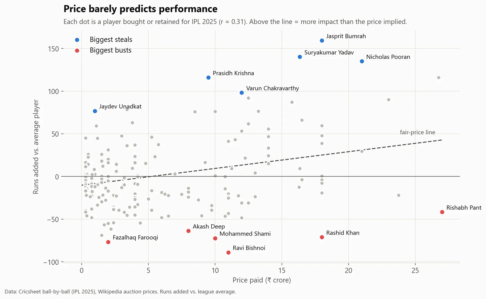
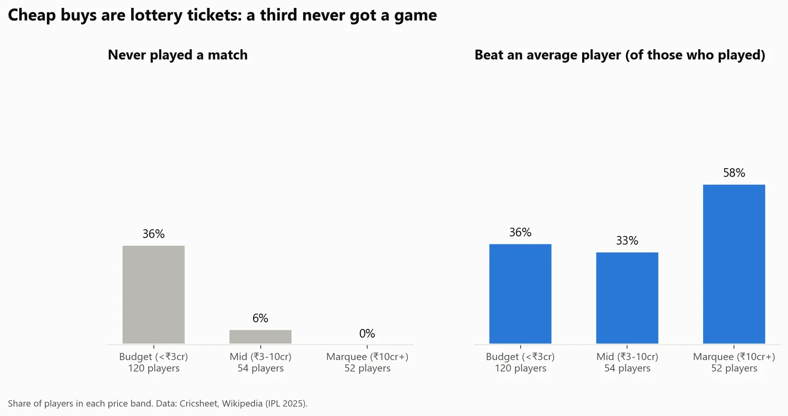
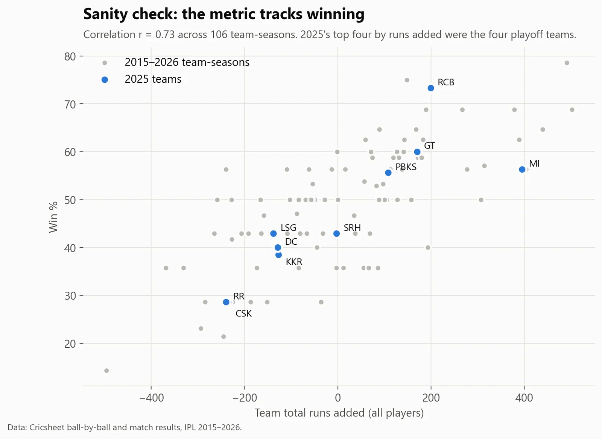
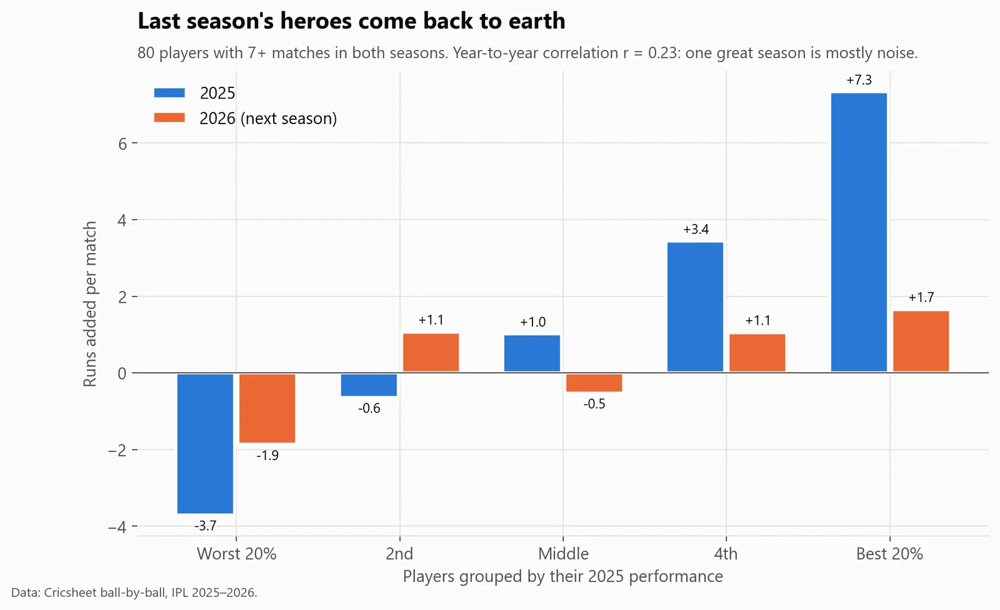

Work/PRJ-01/Sports analytics · IPL 2025
Moneyball IPL: which ₹‑crore buys were busts, and which were steals?
Auction price explained only about 10% of what players actually delivered in IPL 2025. Jasprit Bumrah and ₹1‑crore Jaydev Unadkat were the best value; ₹27‑crore Rishabh Pant and Ravi Bishnoi were among the costliest flops. And 36% of cheap buys never played a match.
- Data
- Every ball of IPL 2015–2026 (Cricsheet), 226 auction prices (Wikipedia)
- Metric
- Runs added vs. an average player
- Tools
- SQL (DuckDB), Python, pandas
- Code
- github.com/BoredMongoose/ipl-moneyball ↗
Are IPL teams getting value for their auction money?
Don't pay for one hot season. Spend on proven, consistent performers (elite bowling was the best value), and don't fill the squad with budget buys who never play.
Of player performance explained by auction price, across ₹1,180 crore spent on 226 players.
01Results
The 10 best and worst buys of IPL 2025.





02How I did it
From raw data to a decision.
- Defined "runs added": every ball is compared with what a league-average player would have done on that ball, in the same season and phase of the innings. Batters gain for scoring faster and losing their wicket less often than average; bowlers the reverse.
- Wrote the metric in SQL with window functions and league baselines.
- Matched auction names to scorecard names ("Ruturaj Gaikwad" vs "RD Gaikwad") using exact matches, an alias list, surname plus initial, and fuzzy matching; four were fixed by hand.
- Checked the work: league totals must add up to zero each season (this caught a bug where missing values were silently skipped), and the results barely change if a wicket is valued at 3, 6 or 10 runs.
03What could make this wrong
The limits, said out loud.
- 01Fielding, captaincy and wicket-keeping aren't measured.
- 02One season is a small sample; rankings describe what happened, not true ability.
- 03Mid-season replacement signings aren't included.
04What I learned
- 01Design the KPI first, then prove it means something: teams' runs added predicted their win rates (r = 0.73).
- 02Name matching is half the job: four matching methods, documented manual fixes, and every unmatched player checked.
- 03Reconciliation checks find real bugs. The league total should be exactly zero, and a NULL-handling error broke that until I fixed it.
05What I'd do next
- 01Add fielding and wicket-keeping, which the metric misses.
- 02Use several seasons per player to separate skill from luck before ranking value.
- 03Turn the fair-price line into an auction tool: a maximum sensible bid for each player.